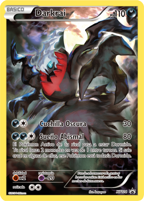
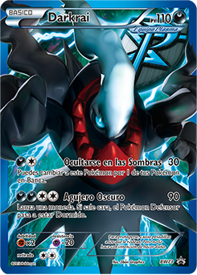

Número de Pokédex: #491


Número de Pokédex: #491


TIPO: Siniestro
Darkrai es un Pokémon mítico/singular de tipo Siniestro introducido en la cuarta generación, conocido como el "Pokémon de la oscuridad y el terror". Su nombre proviene de la palabra inglesa dark y el japonés kurai, ambos significando "oscuro".